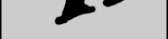
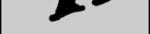

Dinamita periodísticaAlguien está vendiendo uranio a terroristas. Este intrépido reportero fue testigo personal de cómo una poderosa figura vendía una caja de material radiactivo a un grupo de radicales con fuerte acento. Lo más seguro es que los terroristas usen el uranio para fabricar una bomba mortal. ¿Y quién está vendiendo el uranio a los terroristas? Montgomery Burns.volver al sr. x |
|---|